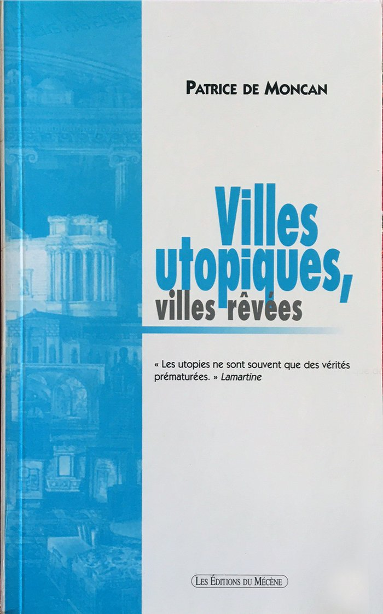

Catalogue · Ouvrage
Urbanisme & utopies
Villes rêvées
Un ouvrage qui explore les villes imaginées, projetées ou rêvées par les architectes et urbanistes à travers l’histoire

Les Éditions du Mécène
Villes rêvées
ÉditeurLes Éditions du Mécène
ThèmeUrbanisme · architecture · utopies
Distinctions—
AuteursLes Éditions du Mécène
DisponibilitéSur demande
Un ouvrage qui explore les villes imaginées, projetées ou rêvées par les architectes et urbanistes à travers l’histoire : cités idéales, utopies urbaines et projets jamais réalisés qui ont pourtant façonné la pensée de la ville.
Demander des informationsQuestions fréquentes
Sur cet ouvrage.
01
Quel est le sujet de Villes rêvées ?
L’ouvrage retrace l’histoire des villes utopiques et des projets urbains imaginés par des architectes et urbanistes, réalisés ou non.
Autres ouvrages
Poursuivre la lecture.
D’autres titres du catalogue, à explorer dans le même esprit.